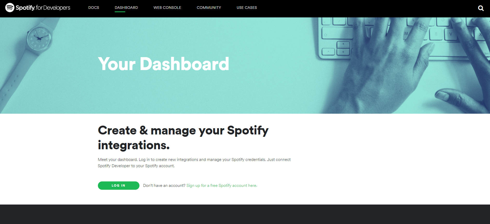
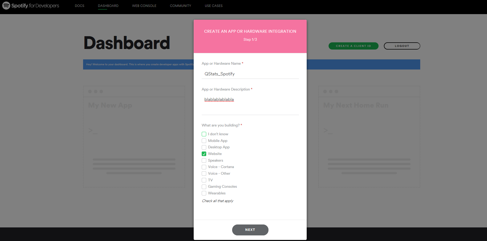
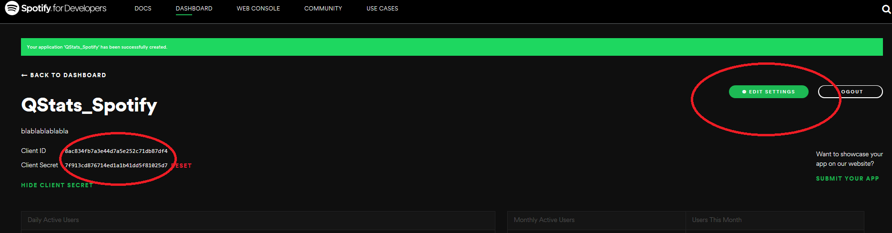
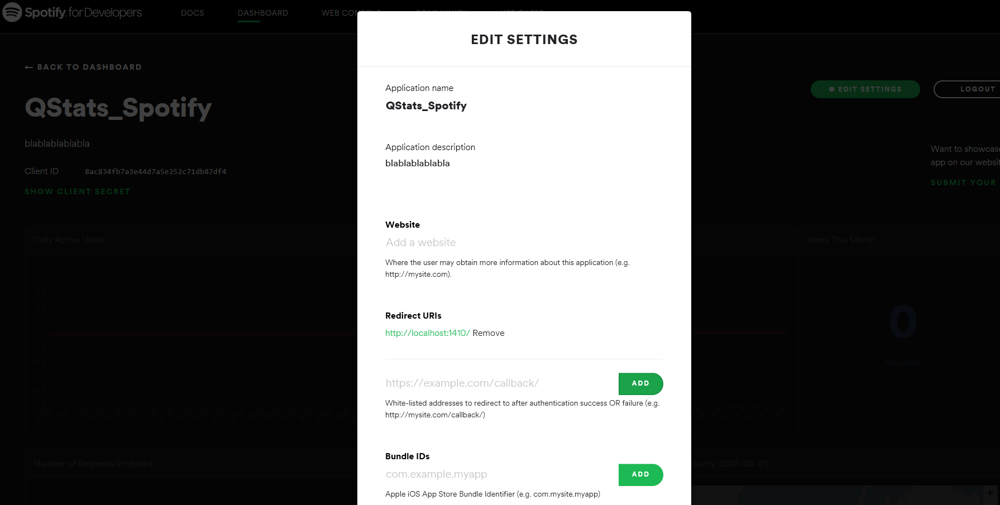

The Rspotify package is finally on CRAN. Now you can install it straight from the official R repository. But what is Rspotify, right?
Basically, Rspotify is a package that allows you to access data from the Spotify API. To make things easier, in this post I’ll guide you on how to use it.
Step 1 - Create an app
The first thing you need to do is to create an app on the Spotify’s developer platform. You can do it accessing this dashboard

After accessing the page, you’ll need to login and create an app:


Since I’m not creating a commercial app, these are my screens. If this is not your case, you must declare it at this point and follow their instructions.

Now, you’ll need to save your client ID and your client Secret. You’ll also need to click on edit settings and change the redirect urls to http://localhost:1410/.


Step 2 - Install Rspotify
You know the drill, right? To install the stable version from CRAN, the official R respository, just run:
install.packages("Rspotify")
library(Rspotify)
library(tidyverse)Step 3 - Try the functions
The first thing you’ll need to do is authenticate your API access using the spotifyOAuth() function. The authentication process should automatically open your browser with just:
keys <- spotifyOAuth("app_id","client_id","client_secret")Note: you must replace ‘app_id’, ‘client_id’ and ‘client_secret’ with your own credentials, with the '', as characters.
If everything went right, then you are ready to go. Your authentication is saved in the keysobject, which will be used whenever you need to use a function that requires it. Let’s try now the getUser() function to get data about an specific user.
# Using my own username
user <- getUser("t.mendesdantas", token = keys)
user$display_name # user name
[1] "Tiago Dantas"
user$id # user id
[1] "t.mendesdantas"
user$followers # number of followers
[1] 53If you want to get the playlists from an user, the function needed is getPlaylists():
# getting the playlists made by Spotify
user_playlists <- getPlaylists("spotify", token = keys)
user_playlists %>% slice(1:5) %>% knitr::kable()| id | name | ownerid | tracks |
|---|---|---|---|
| 37i9dQZF1DXcBWIGoYBM5M | Today’s Top Hits | spotify | 58 |
| 37i9dQZF1DX0XUsuxWHRQd | RapCaviar | spotify | 57 |
| 37i9dQZF1DX4dyzvuaRJ0n | mint | spotify | 61 |
| 37i9dQZF1DX4SBhb3fqCJd | Are & Be | spotify | 45 |
| 37i9dQZF1DXcF6B6QPhFDv | Rock This | spotify | 50 |
The songs from a specific playlist can be retrieved using the getPlaylistSongs() function. Let’s get the songs from the Today’s Top Hits playlist from Spotify:
playlist_songs <- getPlaylistSongs("spotify","37i9dQZF1DXcBWIGoYBM5M",
token = keys) %>%
select(tracks, popularity, artist)
playlist_songs %>% slice(1:15) %>% knitr::kable()| tracks | popularity | artist |
|---|---|---|
| Happier | 97 | Marshmello |
| Better | 91 | Khalid |
| Electricity (with Dua Lipa) | 92 | Silk City |
| Falling Down | 94 | Lil Peep |
| Promises (with Sam Smith) | 97 | Calvin Harris |
| What About Me (feat. Sosamann) | 80 | Lil Wayne |
| Natural | 94 | Imagine Dragons |
| Taki Taki (with Selena Gomez, Ozuna & Cardi B) | 82 | DJ Snake |
| Be Alright | 95 | Dean Lewis |
| Noticed | 89 | Lil Mosey |
| REMEDY | 88 | Alesso |
| I Love It (& Lil Pump) | 98 | Kanye West |
| Eastside (with Halsey & Khalid) | 98 | benny blanco |
| This Feeling | 84 | The Chainsmokers |
| Wake Up in the Sky | 90 | Gucci Mane |
You can also directly search songs, using searchTrack(). Let’s search for the songs with ‘Bohemian Rhapsody’ in their names:
find_song <- searchTrack("bohemian rhapsody", token = keys)
find_song %>% slice(1:5) %>% arrange(desc(popularity)) %>%
knitr::kable()| display_name | id | popularity | artists | artists_IDs | type |
|---|---|---|---|---|---|
| Bohemian Rhapsody - Remastered 2011 | 4u7EnebtmKWzUH433cf5Qv | 81 | Queen | 1dfeR4HaWDbWqFHLkxsg1d | track |
| Bohemian Rhapsody | 2YSbHu9XF4bNYWt3MnIhgE | 66 | Panic! At The Disco | 20JZFwl6HVl6yg8a4H3ZqK | track |
| Bohemian Rhapsody | 0lrkMvRttmoXjMNS8YONvj | 58 | Pentatonix | 26AHtbjWKiwYzsoGoUZq53 | track |
| Bohemian Rhapsody (Glee Cast Version featuring Jonathan Groff) | 0tjeY2rdrKjUjtO5IwKusl | 53 | Glee Cast | 0SCbttzoZTnLFebDYmAWCm | track |
| Bohemian Rhapsody - Live | 5FEV9pypGEx6ndrF3V0cX9 | 51 | Panic! At The Disco | 20JZFwl6HVl6yg8a4H3ZqK | track |
As the API brings us every song that contains the string passed to the function, arranging by decrescent popularity is a good trick to find exactly what we want. When we do this, the song from Bohemian Rhapsody, from Queen, appears as first in the list.
You may want to look for an artist, using the searchArtist() function. Let’s see what the API brings us when we search for bands with ‘Queen’ in their name:
find_artist <- searchArtist("queen",token = keys)
find_artist %>% slice(1:5) %>% arrange(desc(popularity)) %>%
knitr::kable()| artist | id | popularity | followers | genres | type |
|---|---|---|---|---|---|
| Queen | 1dfeR4HaWDbWqFHLkxsg1d | 85 | 9465068 | glam rock,rock | artist |
| Queen Naija | 3nViOFa3kZW8OMSNOzwr98 | 68 | 390482 | deep pop r&b,pop,r&b | artist |
| Queen Pen | 0VbIlorLz3I5SEtIsc5vAr | 66 | 7988 | hip pop,lgbtq+ hip hop | artist |
| Queen Latifah | 5m7wCUhYhBh7A3A3YMxrbt | 59 | 62860 | conscious hip hop,east coast hip hop,hip hop,hollywood | artist |
| Queen Sparrow | 3h4q64lvRUOBfBfjYToYfN | 28 | 322 | artist |
Now, we have the exact id of the band, which will be useful in the next function: getAlbums(). This function is used to get information about the albums available on Spotify from an specific artist:
# using the id we found before
queen_albums <- getAlbums("1dfeR4HaWDbWqFHLkxsg1d", token = keys)
queen_albums %>% slice(1:10) %>% knitr::kable()| id | name | album_type | available_markets |
|---|---|---|---|
| 60TXSuzXQoEy3p5cQEkLu7 | Queen On Air | album | |
| 03fubwn4664emOoK7WkOdK | A Night at the Odeon | album | |
| 5wTdQlDnvBtUO3ptbwqeyz | Live at the Rainbow ‘74 | album | |
| 2S5uBe3Ndy57SwB2dHkNva | Queen 40 Limited Edition Collector’s Box Set | album | |
| 2IY3Ty8CrUyvpibt8AcZmp | Queen Rock Montreal | album | |
| 2SFIh6siY4KYBNPHAV7xaI | Made In Heaven | album | |
| 4fODEKBcruDGTihYHvBXBD | Made in Heaven (Deluxe Remastered Version) | album | |
| 3uk2r2tVRHy9L15rHJhD2S | Live At Wembley Stadium | album | |
| 5yAM3CcaXF6DPRJW3oL6Ya | Innuendo | album | |
| 2LC6PPb29hs8rkPHBjUVXJ | Innuendo (Deluxe Remastered Version) | album |
To get the more info about an specific album and its songs, you should use getAlbumInfo() and getAlbum(). For example, let’s check the album ‘Made in Heaven’:
id_album <- queen_albums %>%
filter(name == "Made In Heaven") %>%
pull(id)
made_in_heaven_info <- getAlbumInfo(id_album, token = keys)
made_in_heaven_info %>% knitr::kable()| id | artist | name | label | popularity | release_date | album_type | track_total |
|---|---|---|---|---|---|---|---|
| 2SFIh6siY4KYBNPHAV7xaI | Queen | Made In Heaven | Hollywood Records Inc. | 34 | 1995-11-06 | album | 13 |
made_in_heaven <- getAlbum(id_album, token = keys) %>%
select(-preview_url)
made_in_heaven %>% select(id, name, duration_ms, track_number) %>%
knitr::kable()| id | name | duration_ms | track_number |
|---|---|---|---|
| 2nvOeJSDrYfUqPsX1QV31m | It’s A Beautiful Day | 152760 | 1 |
| 4PrIEi2GXvCKGX5FfgvZ5t | Made In Heaven | 325333 | 2 |
| 5xksN73zPWG6l5jyOnQBCM | Let Me Live | 285866 | 3 |
| 0ntPrUioU4nZf4xlYgXxCu | Mother Love | 286160 | 4 |
| 7f85HUTCTBRbXVQrhbwGeG | My Life Has Been Saved | 195400 | 5 |
| 3K1Z590k8xkKWcyWjDUL2S | I Was Born To Love You | 289773 | 6 |
| 7Lyci2dYU5I7Rgl1Gxgc7q | Heaven For Everyone | 336066 | 7 |
| 59xNhKR4abaCKdHzIxTApc | Too Much Love Will Kill You | 260133 | 8 |
| 5K7JrTWUDr7R0paSy4rVYh | You Don’t Fool Me | 324800 | 9 |
| 36XSfd5hlzRYNtUo9xMXHT | A Winter’s Tale | 229160 | 10 |
| 4JSwW10eamq8dmXljmdnYs | It’s A Beautiful Day (Reprise) | 181360 | 11 |
| 198X5Hqdx31ir9V8SJev8k | Yeah | 4000 | 12 |
| 0fesg0K7qtSHVhNAOZ3dy8 | Untitled | 1352973 | 13 |
So far, we have seen a lot of interesting stuff, but there’s more. We can also check the features from a specific song, using the getFeatures() function. Let’s check the ‘Made In Heaven’ song:
id_song <- made_in_heaven %>%
filter(name == "Made In Heaven") %>%
pull(id)
song <- getFeatures(id_song, token = keys)
song %>% select(-uri, -analysis_url) %>% glimpse() %>% knitr::kable()
Observations: 1
Variables: 14
$ id <chr> "4PrIEi2GXvCKGX5FfgvZ5t"
$ danceability <dbl> 0.374
$ energy <dbl> 0.755
$ key <int> 8
$ loudness <dbl> -6.507
$ mode <int> 1
$ speechiness <dbl> 0.0543
$ acousticness <dbl> 0.318
$ instrumentalness <int> 0
$ liveness <dbl> 0.344
$ valence <dbl> 0.411
$ tempo <dbl> 77.821
$ duration_ms <int> 325333
$ time_signature <int> 4| id | danceability | energy | key | loudness | mode | speechiness | acousticness | instrumentalness | liveness | valence | tempo | duration_ms | time_signature |
|---|---|---|---|---|---|---|---|---|---|---|---|---|---|
| 4PrIEi2GXvCKGX5FfgvZ5t | 0.374 | 0.755 | 8 | -6.507 | 1 | 0.0543 | 0.318 | 0 | 0.344 | 0.411 | 77.821 | 325333 | 4 |
Wrap up
In this blog post, we:
- we explained how to create an app and obtain the authorization to access the Spotify API.
- introduced the
Rspotifypackage, which connectsRwith the Spotify API. - we used the band ‘The Queen’ as the basis for our examples.
The RSpotify is a package with a tremendous potential. There a lot of cool, interesting analysis we can make with the information it brings us. Soon we’ll more posts about it!